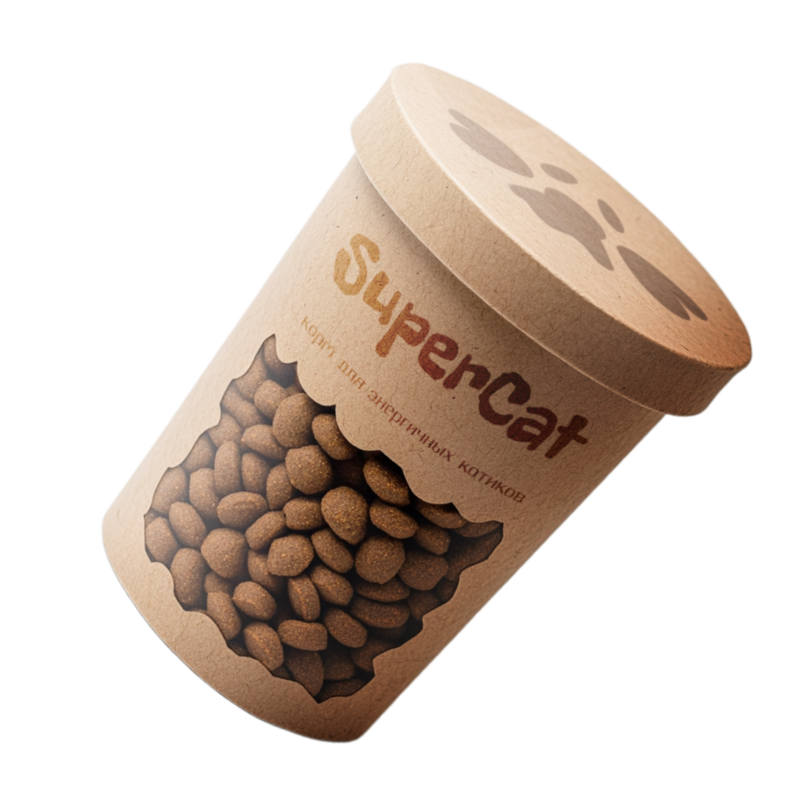

SUPER
CAT
Главная
Каталог продукции
Подбор программы
Функциональное
питание для котов
Занялся собой? Займись котом!

Подобрать программу
ПОХУДЕНИЕ
Ваш кот весит больше собаки и
почти утратил способность
лазить по деревьям? Пора на
диету! SuperCat Slim поможет
вашему питомцу сбросить
лишний вес.
CATALOG SLIM